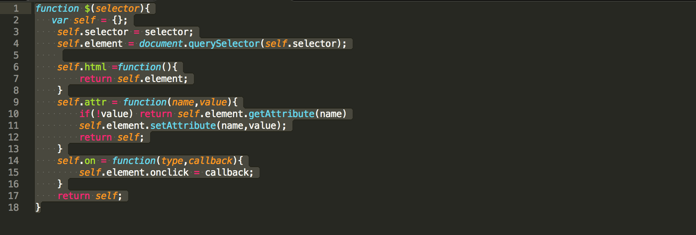

Hier kunt u mijn keuzes en werkzaamheden voor het leerdoel frameworks terug lezen.
Om te beginnen ben ik gaan kijken of ik op udemy een cursus kon volgen voor frameworks. Maar helaas heb ik niks gevonden dat ik kon volgen. Verder ben ik begonnen met een JS-basics cursus om Javascript te snappen omdat ik nog geen echte javascript kennis had. Verder ben ik gaan kijken naar bestaande frameworks en wat ze allemaal doen. Ook wat ik ermee kan doen. Verder heb ik gekozen om vanille JS te gebruiken omdat het voor mijn het beste optie was. Dan leer ik meteen hoe JS werkt zonder “shortcuts”
Probleemstelling
Ik wilde iets doen met stylesheets of view ports. Dus ik ging kijken wat ik allemaal kon maken. Het probleem die ik wil oplossen is dat de gebruiker meerdere stylesheets kan aanroepen. Dit kan gebruikt worden voor A/B testing of als je een nacht modefunctie wil voor je website.
Aanpak
Ik ben eerste naar een Youtube tutorial gaan kijken om een basic framework structuur te maken. Verder ging ik met Mijke sparen om mijn idee duidelijker te maken. Ik heb tips gekregen hoe ik hem verder kan uitwerken en uitbreiden.
Functies
Mijn framework moet een slide out tab zijn.
Mijn framework moet een stylesheet override kunnen.
Mijn framework moet stylesheets uit documents folder lezen en tonen in een lijst
Mijn framework moet de gebruiker laten kiezen welke stylesheet actief is.
Uitwerking
Ben begonnen met een cursus waar je een basis framework voor on click maakt. Verder ben ik met de basis begonnen in html en css voor mijn slide out bar. Ik ben nog bezig met mijn JS cursus om uiteindelijk mijn frame work te maken.
Reflectie
Mijn ervaring met framework deze semester is niet zo prettig omdat ik geen verstand heb van javascript en we moeten nu een framework bouwen. Met programmeren vind ik dat ik achterloop. Mijn aandacht zit ook niet bij programmeren. Om te beginnen was frameworks veel te laat gegeven voor mij gevoel. We waren druk bezig met de proftaak om ook nog in onze vrije tijd aan frameworks te werken. Ik ben begonnen met cursussen volgen omdat een beter verstand van javascript te krijgen. Ik vond het moeilijk om een framework idee te verzinnen. Dus ik ben gaan kijken wat ik allemaal kon maken. Voor mijn gevoel waren ze heel complex en niet beginner vriendelijk. Dus ik ben met Mijke gaan sparen om te kijken wat ik kon maken. We zijn samen gaan brainstorm om mijn idee duidelijker te maken. Uiteindelijke idee is een framework die je stylesheet aanpast. Deze framework kan je gebruiken voor A/B testing. Na een duidelijk idee ben ik begonnen met mijn framework bouwen. Ik heb basisfuncties gemaakt. Maar hij deed nog niet volledig wat he moest doen. Dus ik vroeg Mijke om hulp en feedback. Mijke heeft de fouten uit mijn functies gehaald. Verder hebben wij de code verbeterd. Ik dan begonnen met het bouwen van mijn framework. Ik heb een basis framework gemaakt maar ik zat weer vast. Ik heb Mijke voor hulp gevraagd om eruit te komen. We hebben samen het begin van framework gemaakt. Verder heb ik niet veel aan mijn framework gewerkt. Wat ik van mezelf heb geleerd is dat ik extra tijd nodig heb om te programmeren. Dus ik moet zo snel mogelijk beginnen met programmeren en niet uitstellen. Met fout was dat ik het heb uitgesteld omdat ik te druk was met de proftaak en mijn persoonlijk leven. Allebei Semester 3 en 4 zijn niet goed gegaan met DEV omdat ik niet genoeg programmeert. Ik wil wel komende zomer veel meer gaan programmeren om mezelf scherp te houden. Anders blijf dev voor mij altijd een valkuil. Ik wel deze semester een beter verstand van Javascript, ik kan nu een framework beginnen. Ik snap nu beter hoe een framework werkt. Als ik weer een framework moet bouwen zou ik vanaf dag 1 beginnen omdat ik de tijd nodig heb. Ik zal wat ik nu heb als framework verder uitwerken in de zomer om te oefenen. Zo hou ik mezelf bezig met programmeren. Voor DEV wil ik front-end development doen dat ik na de vakantie programmeren een beetje onder de knieën heb.
Tot nu toe Verwerkende Framework switchie.js